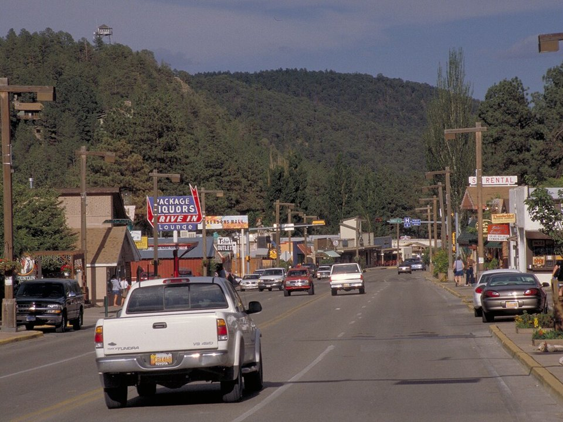

Mescalero · Resort
Inn of the Mountain Gods
A resort on a mountain lake with golf and a casino.
Official details for Inn of the Mountain GodsPines, ponies and Billy the Kid.
Ruidoso is where West Texans and New Mexicans go to escape the summer heat, a mountain town of cabins and shops in the pines below 12,000-foot Sierra Blanca. Land at Sierra Blanca Regional, stay at the Mescalero Apache Tribe’s Inn of the Mountain Gods on its mountain lake, watch quarter horses run at Ruidoso Downs, ski at Ski Apache in winter, and drive to Lincoln, the Old West town of Billy the Kid.

Time illustration: direct distance at 150 KTAS plus 15 minutes for departure and arrival, matching the discovery page. Use ForeFlight for your actual flight plan.
Check the weekend weather at both ends → Flight category, your minimums and the crosswind on the best runway.
KSRR, Sierra Blanca Regional, is a non-towered airport at 6,814 feet with an 8,120-foot main runway, about 20 minutes from Ruidoso.
Sierra Blanca Regional Airport, Alto, NM
High elevation and mountain terrain; summer density altitude is high and storms build over Sierra Blanca in the afternoon. Confirm a rental car or shuttle before you go. No live fuel price is shown.
High desert flying: high density altitude in summer, strong gusty spring winds and mountain wave, afternoon monsoon storms from July to September, winter snow, and long distances between airports. About 1330 nm from Myrtle Beach: two long days each way with several fuel stops. Plan a week, or overnight on the way out and back.
Rates and availability need travel dates. Book early for the Labor Day races.
A resort on a mountain lake with golf and a casino.
Official details for Inn of the Mountain GodsA full-service lodge with a pool and mountain views.
Official details for MCM Eleganté Lodge & ResortCabins and condos around a nine-hole golf course in the pines.
Official details for Innsbrook VillageLodge rooms and whirlpool cabins in the Upper Canyon.
Official details for Shadow Mountain Lodge & CabinsLog cabins in the pines near the river.
Official details for Story Book CabinsCabins, lodges and rentals.
Discover Ruidoso for More places to stayPrices and availability for your dates, through our partner Stay22. This is an affiliate link: we may earn a commission at no cost to you. The picks above are never paid.
Reserve weekend dinners.
Steaks and lake views at the resort.
Official details for Inn of the Mountain Gods restaurantsSteaks and prime rib on Sudderth Drive.
Official details for Cattle BaronNew Mexico wines at the Ruidoso tasting room.
Official details for Noisy Water WineryGreen-chile burgers and local beer on Mechem Drive.
Official details for Anaheim JacksSoups, sandwiches and famous pies on Sudderth Drive.
Discover Ruidoso for The Village ButteryA local favorite for breakfast and pastries.
Discover Ruidoso for Cornerstone Bakery & CaféRestaurants in Ruidoso.
Discover Ruidoso for More restaurantsSummer is the busy season.
The southernmost major ski area in the country, with a summer gondola and zip line.
Ski ApacheThis prototype links to the local visitor site. It does not yet match events to your travel dates.
The richest quarter-horse race.
Ruidoso Downs for All American FuturityRacing at Ruidoso Downs.
Ruidoso Downs for Racing seasonSkiing at Ski Apache.
Ski Apache for Ski seasonCheck the local calendar when choosing a weekend, and confirm dates and tickets with the organizer.
A sample Ruidoso weekend. This is a two-day flight each way; plan a week. No bookings or availability confirmed.
Land at KSRR mid-morning.
Lunch in Midtown Ruidoso.
The Ski Apache gondola, then back to the airport.
Land at KSRR, subject to weather, density altitude and your actual flight plan.
Check in at the Inn of the Mountain Gods.
Dinner at the resort.
The races at Ruidoso Downs.
Drive to Lincoln.
Dinner in town.
The Ski Apache gondola.
Compute takeoff performance for the temperature and allow time at the FBO.
Mountain storms build by afternoon; leave early.
Lincoln Historic Site.
The races at Ruidoso Downs.
Dinner at the Inn of the Mountain Gods.
This guide is part of a multi-stop flying trip. Set your dates and aircraft, then swap stops to make it your own.
These details make the difference between an appealing list and a usable getaway.
Lodging first for race weekends.
About 1,330 nm from Myrtle Beach: two days each way.
Ruidoso is about 6,900 feet.
May to October, and ski season.
Picks and links reviewed by WingAway Weekends. Hours, prices, menus and availability change often, so confirm directly with each place before booking. Spotted something out of date, or have a favorite we missed? Email us at hello@wingawayweekends.com.
WingAway Weekends helps you discover the destination. Use ForeFlight and current official aviation information for route, performance, weather, NOTAMs and preflight decisions. Flight planning and PIC responsibility stay with the pilot.